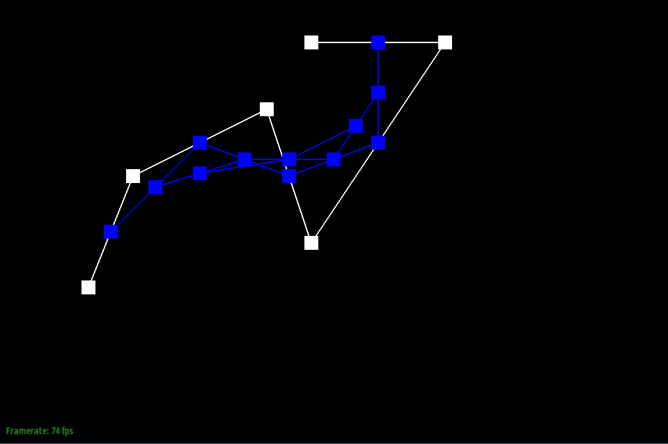
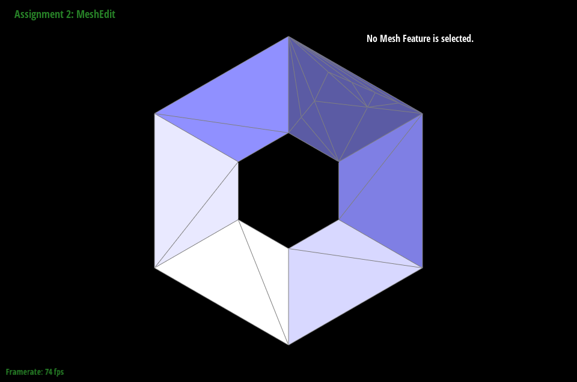

Give a high-level overview of what you implemented in this homework. Think about what you've built as a whole. Share your thoughts on what interesting things you've learned from completing the homework.
Section I: Bezier Curves and Surfaces
Part 1: Bezier curves with 1D de Casteljau subdivision
The De Castlejau algorithm can be used to map every point in \(t\in[0,1]\) to a 2D point on a Bezier curve. This is done by running the following algorithm (one iteration of subdivision is represented in BezierCurve::evaluateStep()):
You start with the 1D point you want to evaluate at (\(t\)) and a list of control points \(p_1,p_2,\dots,p_n\)
Subdivision: we recursively do the following until our list of points is of length \(1\).
Create a new list of points such that \(p_i'=p_i(1-t)+p_{i+1}t\) (this is going to be one point less than the previous iteration's number of points).
This is our new list of points for the next iteration (i.e. \(p_i':=p_i\)).
This will eventually result in a single point \(p^\star\), which is the point on the Bezier curve corresponding to our specific \(t\)-value. So, once we sample enough \(t\)-values to get a smooth enough curve, we will connect the points with lines to generate our final curve to draw.
I created a new Bezier curve with 6 control points and it is in my code repository under bzc/curve_custom.bzc.
Here are screenshots of my interpolation with the default \(t\)-value:
Iteration 1
Iteration 2

Iteration 3
Iteration 4
Iteration 5
Final Curve
My new Bezier curve is defined under bzc/curve_custom_other.bzc. The screenshot of the curve with a higher control point (i.e. \(t\) closer to \(1\)) is below:
Part 2: Bezier surfaces with separable 1D de Casteljau
Essentially, we have \(n\times n\) points \(p_{1,1},p_{1,2},\dots,p_{n,n-1},p_{n,n}\) that define \(n\) individual Bezier curves (ex. curve \(i\) is defined by the points \(p_{i,1},p_{i,2},\dots,p_{i,n}\)). To get the 3D point corresponding to \((u,v)\), we first perform \(n\) independent recursive subdivisions with parameter \(u\in[0,1]\) on each curve. We take the resulting \(n\) points \(p_1^\star,p_2^\star,\dots,p_n^\star\), and then we perform the recursive subdivision with parameter \(v\) on these \(n\) points. The 3D point corresponding to \((u,v)\) is the result of our final subdivision with parameter \(v\). The process to perform each \(n\)-point subdivision is the same as in Task 1, but we also take into account dimension \(z\) when performing our subdivision. After picking sufficiently many points \((u,v)\) such that \(u\in[0,1]\) and \(v\in[0,1]\), we connect them in a grid-like fashion to generate our mesh. To implement this task, I did the following:
I defined a single iteration of subdivision just like in Task 1, but added a third dimension for the \(z\)-coordinate: \(p_{i_{z}}'=p_{i_z}(1-t)+p_{{i+1}_z}t\) (this corresponds to BezierPatch::evaluateStep()).
I run this algorithm recursively until we end-up with exactly 1 final point (as I described in Task 1) (this corresponds to BezierPatch::evaluate1D()).
For each row of \(n\) points in my mesh, I run the BezierPatch::evaluate1D() function on the list of points with parameter \(u\). I then take the resulting points and run BezierPatch::evaluate1D() on them with the parameter \(v\). This results in my corresponding 3D point for my pair \((u,v)\).
Here is a screenshot of the rendering of bez/teapot.bez by my code:
Section II: Triangle Meshes and Half-Edge Data Structure
Part 3: Area-weighted vertex normals
We have to go through each of these steps to get our area-weighted vertex normals for a vertex \(x\):
We first create a \(0\)-length vector \(r\) to represent our result, and we get the pointer/iterator to the current half-edge that our vertex corresponds to.
We perform the following until we reach the starting half-edge we started the function with:
We first get the vector normal to the triangle corresponding to the half-edge we are currently looking at (this can just be done by using the Face::normal() function that is given to us).
Now, we need to find the area of the triangle. A useful formula is that for a vector \(u\) and a vector \(v\) that describe a triangle (\(v\) represents a directed side of the triangle starting from where \(u\) ends):\[\text{Area}=\frac{1}{2}\|u\times v\|_2\]
We can find our vector \(u\) by subtracting the next counter-clockwise face to our current face (half_edge->next()->vertex()->position) by the position of \(x\).
We can find our vector \(v\) by subtracting the next, next counter-clockwise face's starting vertex position (half_edge->next()->next()->vertex()->position) by the next counter-clockwise face's starting vertex position (half_edge->next()->vertex()->position).
We then multiply our triangle normal vertex by the area that we calculated (I omitted the \(\frac{1}{2}\) factor of the area in the code since we will normalize in the end anyways).
We add this vector to our total result vector.
The next half-edge we will look at will be the counter-clockwise half-edge of the twin of the current half-edge (half_edge->twin()->next()). This is essentially us moving to the next clockwise triangle for our next iteration.
We return the normalized version of our accumulated result vector.
Here is a comparison of dae/teapot.dae with and without utilizing vertex normals:
Without Vertex Normals
With Vertex Normals
Part 4: Edge flip
I visualized my triangle according to the picture at the top of the Task 5 spec (a triangle with vertices labeled \(A,B,C,D\)). I set my "reference point" to be the half-edge from the vertex \(B\) to the vertex \(C\) (i.e. e0->halfedge()). I defined all other half-edges accordingly, along with the vertices and the faces (I defined the left face as "face \(A\)", and the right face as "face \(D\)"). The picture I am referring-to in the task spec is the following:
Here are the reassignments I made to flip the edges (assuming that the edge is not a boundary edge):
Half-Edges:
\(BC\) (which becomes \(AD\)): I set the vertex to \(A\) and the next half-edge to \(DC\).
\(CA\): I set the next half-edge to \(AD\).
\(AB\): I set the next half-edge to \(BD\) and changed the face to Face \(D\).
\(CB\) (which becomes \(DA\)): I set the vertex to \(D\) and the next half-edge to \(AB\).
\(BD\): I set the next half-edge to \(DA\).
\(DC\): I set the next half-edge to \(CA\) and changed the face to face \(A\).
Vertex:
\(A\): I set the half-edge to \(AD\).
\(B\): I set the half-edge to \(BD\).
\(C\): I set the half-edge to \(CA\).
\(D\): I set the half-edge to \(DA\).
Faces:
Face \(A\): I set the half-edge to \(AD\).
Face \(B\): I set the half-edge to \(DA\).
Edges: I don't have to change anything, as each edge should still points to the same set of two half-edges.
To avoid bugs, I was very careful with storing all of the half-edges, vertices, and faces in intermediate variables to avoid unwanted/unintended variable assignments, and I assigned variable names corresponding to the diagram on the spec sheet (I did not encounter any non-trivial bugs that required me to add extra debugging infrastructure).
Here are screenshots before and after edge flips:
Before Edge Flips
After Edge Flips
As for bugs I encountered, since I stored all of the half-edges, vertices, and faces in intermediate variables to avoid unwanted/unintended variable assignments, and I assigned variable names corresponding to the diagram on the spec sheet, I ended-up not encountering any notable implementation bugs! But, I did have one embarrassing bug where I stored the mesh elements as references instead of just plain iterators (leading to changes to the elements altering the temporary storage of the iterators, thus leading to holes in the mesh when trying to flip edges). This bug actually wasted significant time, to my dismay.
Part 5: Edge split
I used the diagram provided in the spec for guidance/a frame of reference (similar to Task 4):
The first step I took was to delete the edge \(CB\), Face \(A\), Face \(D\), and the half-edges \(CB\) and \(BC\) (I defined these terms in my Task 4 description). Then, I created a new vertex \(V\) with the position that is the average of the positions of vertices \(C\) and \(B\). I also created 8 new half-edges to be edges going from vertex \(V\) to vertices \(A,B,C,D\) (and in the opposite direction). I also created 4 edges to correspond to these new half edges. As for the faces, I created 4 new faces: Face 1, Face 2, Face 3, and Face 4 (their positions in the diagram correspond to the 4 quadrants of the right image, and the order corresponds to the way quadrants are ordered on the coordinate plane). I set the neighbors of each half-edge (\(AB,BD,DC,CA,VC,CV,VB,BV,AV,VA,DV,VD\)) according to their corresponding faces, edges, twins, and next half-edges in the mesh (similar to Task 4). I also updated each face and vertices \(V\), \(B\), and \(C\) (since \(B\) and \(C\) could have their references pointing to the deleted half-edges of edge \(BC\)) to point to valid half-edges. This takes \(\mathcal{O}(1)\) time just like in Task 4, since we are only looking at mesh elements in the two triangles our edge is a part of. As for debugging tricks, since I did not have any bugs in my code for this task, I did not make any unique tooling or use any interesting debugging tricks to solve bugs.
Here are screenshots before and after edge splits:
Before Edge Splits
After Edge Splits
Here are screenshots before and after a combination of edge splits and edge flips:
Before Edge Splits and Edge Flips
After Edge Splits and Edge Flips
I ended-up not having any bugs, and my code worked on the first try. I do attribute this to my use of a written diagram throughout the coding process (and double-checking each line of typed code to avoid any hard-to-find bugs that were a result of mis-typing parameters/commands when updating edge/face/half-edge neighbors).
Part 6: Loop subdivision for mesh upsampling
To implement loop subdivision, I followed the general solution structure provided in the spec. I will refer to the below diagram:
So, I took the following steps:
For every edge in the mesh, I calculated a weighted average of the 4 points on the two triangles according to the following formula:
\[\frac{3}{8}(A+D)+\frac{1}{8}(B+C)\]
where I assume that the edge that I am trying to calculate the average for is \(AB\) as shown in the diagram. This vector will serve as the position of the point that will appear in the middle of this edge when we perform edge splitting. I stored this position/average in the Edge::newPosition property and set Edge::isNew to false to signify that this edge was not the result of a splitting.
For every vertex \(V\) in the mesh, I used the Vertex::degree() function to get the value of \(n\) referred-to in the picture (this is just the number of vertices adjacent to \(V\) in the mesh). I then looped through all adjacent vertices (using a similar technique to Task 3) to sum over all the vertex positions of adjacent vertices to \(V\). Assuming that the position of my central vertex is \(v\) and the sum of the adjacent vertices' positions is \(S\), I calculated the following:
\[v':=(1-un)v+uS\]
where \(u\) is defined according to the diagram. \(v'\) will be the position of \(V\) in our final mesh. I stored this position in the Vertex::newPosition property and set Vertex::isNew to false to signify that this edge was not the result of a splitting.
Edge Splitting: I first created a duplicate list of references to all the edges in our mesh to avoid looping errors/infinite loops when trying to split every edge currently in the mesh (since the splitting operation alters the list of edges). Then, I split every edge that was not a boundary edge by looping through this duplicate list, along with setting the new edges' and vertex's isNew property to true (and storing the edge's newPosition parameter in the new vertex's newPosition parameter).
Edge Flipping: This is where the isNew property really comes-in handy. I loop through all edges in the new splitted mesh (I am no longer looking at the duplicate list I created of old edges). I flip every edge that is new (i.e. Edge::isNew is true) AND connects a new vertex with an old vertex (i.e. a vertex with isNew set to false and another vertex with isNew set to true). This ensures that we get the "stack of 4 triangles" effect that is desired for this algorithm.
Vertex Positioning: We now set every vertex in our graph to have its Vertex::position property equal to the Vertex::new_position property (this was done in the end to avoid unwanted position changes during the edge flipping, average calculations, and edge splitting).
As for debugging tricks, I did not really use anything sophisticated and the primary issue I had was that I initially did not create a duplicate list of edges before splitting (leading to an infinite loop in my code). I resolved this issue by printing-out memory addresses of the edges in my code, where I realized I was sometimes looping through the same edge on repeat. Another issue I had was that I performed integer division instead of floating-point division when calculating the averages for the new vertex positions. I simply solved this by printing-out my calculated final vertex points (where I realized that there were far too many zeros in the vector components).
Firstly, I observed the effect of the loop subdivision on the icosahedron shape. It appears that the algorithm turns the sharp edges of the polyhedron into a more rounded shape by adding many more triangles to the mesh (so, we essentially lose all of the sharp edges the more we sub-divide). Screenshots of the outputs for dae/icosahedron/input.dae are below:
No Subdivisions
1 Subdivision
2 Subdivisions
3 Subdivisions
Secondly, I observed the torus, which is a more round shape. It appears that the mesh performs much better in preserving/enhancing rounder shapes, as the many triangles make the mesh essentially converge to a ring, which is desired. Screenshots of the outputs for dae/torus/input.dae are below:
No Subdivisions
1 Subdivision
2 Subdivisions
3 Subdivisions
Finally, I added some of my own edge splits to one part of the torus to see how the loop subdivision would respond. I managed to generate a torus with a distinctive dent in the area where I made manual edge splits, but the loop subdivision still maintains the rounding effect that negates the effect of sharp corners in our mesh. Here are screenshots of dae/torus/input.dae with manual edge splits added:

No Subdivisions
1 Subdivision
2 Subdivisions
3 Subdivisions
Overall, although loop subdivision does a great job of smoothening sharp edges when they are unintended (ex. if we have a human sculpture that has a lot of unintended sharp edges), loop subdivision can remove/reduce the effect of sharp edges even when they are key to identifying the shape that we are trying to upsample.
The loop subdivision performs quite poorly on dae/cube.dae without any manual edge flips/splits. In fact, the shape even becomes asymmetric after around 3 subdivisions! While the Icosahedron maintained symmetry while sacrificing sharp corners, the cube appears to lose both its sharpness and symmetry. Screenshots of the cube rendered by my code is below:
No Subdivisions
1 Subdivision
2 Subdivisions
4 Subdivisions
A key thing I noticed in the icosahedron that I did not notice in the cube was that the edges of the icosahedron were distributed symmetrically (in both their orientation and number) around the 3D model, whereas with the cube, the edges were placed asymmetrically around the cube (the directions were not rotationally symmetric). My first instinct was to rotate one of the edges that were rotationally asymmetric (the edge on the bottom of the cube), which yielded the following:
No Subdivisions
1 Subdivision
2 Subdivisions
4 Subdivisions
Flipping that edge improved the symmetry in the cube, but two opposite corners in the 4 subdivision cube were still much longer than the other corners. So, there is still more I could do to have complete symmetry among all cube corners. My second try was to split the diagonal edge on every side of the cube (so every side of the cube will look like an X before subdivisions are performed). This is how this experiment went:
No Subdivisions
1 Subdivision
2 Subdivisions
4 Subdivisions
So, by ensuring that the edges are identical and symmetrical on each side of the cube, we have achieved symmetry in the cube (albeit we still have heavily rounded corners with our subdivision). The reason that our symmetry in edges results in a more symmetric output is likely that the edge splitting will have the same effect on every side of the cube (and hence the flips will be the same on both sides), and since each subdivision maintains the same symmetry, we will have a symmetric cube after each subdivision. Without this symmetry, the edge splits could be in different-shaped triangles, leading to a snowball effect where the cube gets more and more asymmetrical.